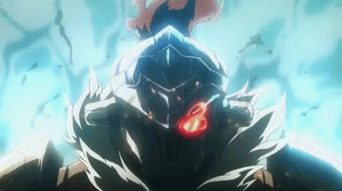
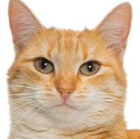
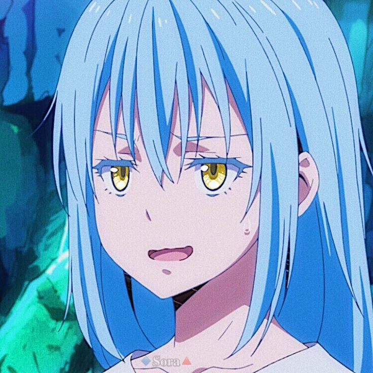
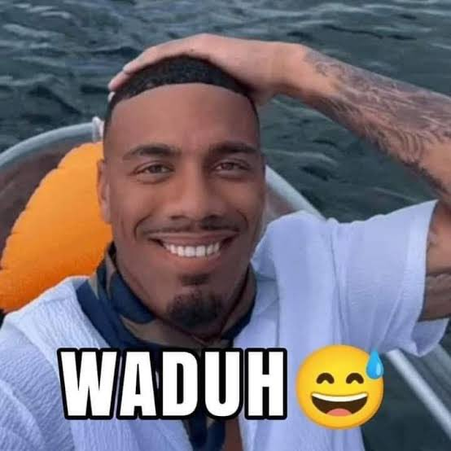

Heroes or Warriors, are people that have been summoned by the "otherworlds"
from Earth, the World of Void, to defeat a Demon Lord, with each being given
extraordinary powers respective to their world to defeat their version of the
“Demon King” who is terrorizing and endangering that world’s inhabitants.
After “saving” that world, the Heroes are then returned to their homeworld.
Minsu Kim also known as Sword hero is the strongest hero we currently fight
His main power is his sword along with his super speed, super strength,
and his other ability to manipulate law of physics known as magic.
Founding Father
Tay

Tay is a fearsome hunter whom usually hunts Goblins.
Trained by Shaman he became the most strategic ruthless hunter.
He's currently at Adamantitum rank on Adventure Guild.
Meongman

Meongman is a beast mixed as a man and as a cat.
He's strong yet soft didn't really like violence
as long as he doesn't get aggro he is wise kind.
Zen

Zen is a consistent persistent human could ever achieve.
He can focus on his work night and day withouth receiving
heavy consequences. He is a man you should not messed with.
Jawir

Jawir is a man of many. He can shapeshift into everything
everyone. He also is a charmer both man and woman could not
resist his charm.